Official LIKELION at SKU
기획 & 디자인
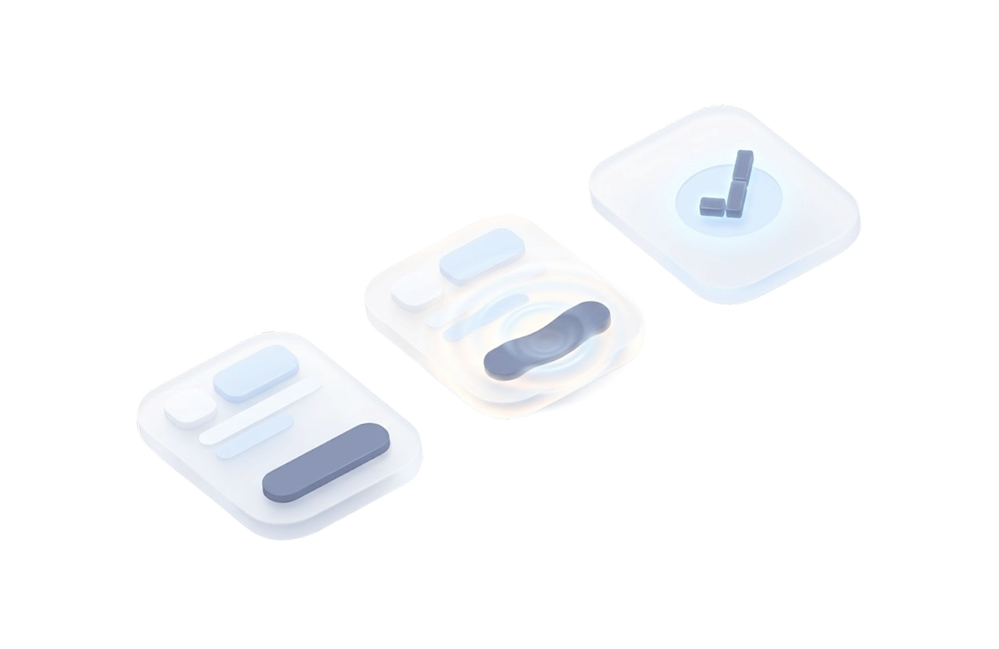
Official LIKELION at SKU
11주차 기획시간!
BM: 비즈니스 모델과 수익 모델
우리가 만든 서비스, 이거 어떻게 돈 벌어요?
어떤 방식으로 수익을 만들며
어떻게 지속될 수 있는지 정리합니다.

Official LIKELION at SKU
오늘 배우게 될 것
사용자에게 주는 가치뿐 아니라
돈이 들어오고 나가는 구조까지
설명할 수 있어야 합니다
BM이 필요한 이유
서비스가 왜 쓰이고 어떻게 지속되는지 이해하기
BM과 수익 모델 구분
사업 전체 구조와 돈이 들어오는 방식을 구분하기
수익 모델 이해와 선택
수익 모델을 살펴보고 서비스에 맞는 방식 고르기
Lean Canvas로 정리
고객, 가치, 수익원, 비용 구조를 한 장으로 정리하기
Official LIKELION at SKU
PART 1 · BM이 필요한 이유
“그래서 이거… 어떻게 돈 벌어요?”
발표 때 누군가 이렇게 묻습니다.

Official LIKELION at SKU
PART 1 · BM이 필요한 이유
1주차 역기획, 한 발 더 들어갑니다
- 1주차 역기획 마지막 단계 — “기획자가 수익을 발생시키려 설계한 장치는 어디 있나?”를 찾아봤죠.
- 그땐 “장치가 어디 있나”까지만. 오늘은 그 장치가 무슨 종류이고, 왜 골랐고, 뭐가 맞는지까지 갑니다.


Official LIKELION at SKU
PART 1 · BM이 필요한 이유
좋은 기획은 화면에서 끝나지 않습니다
오늘 주제
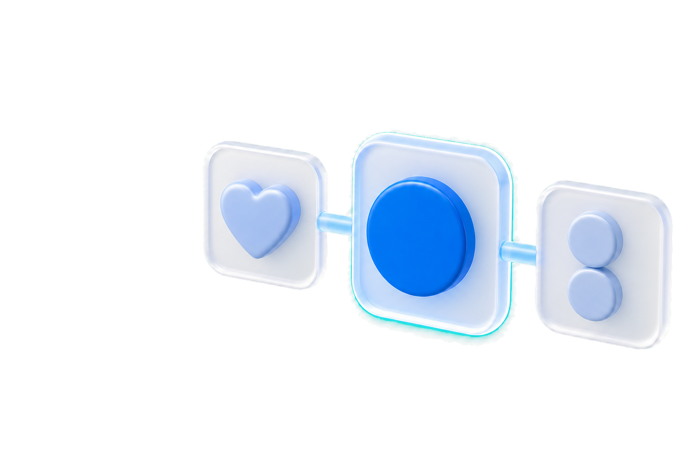
Official LIKELION at SKU
PART 2 · BM과 수익 모델 구분
비즈니스 모델 ⊃ 수익 모델
이름이 비슷해서 헷갈리지만, 둘은 포함 관계입니다.
수익 모델 = 그중 “돈이 들어오는 방식” 한 조각 (구독·광고·수수료…)
2주차의 Why–Who–What–How가 비즈니스 모델의 뼈대입니다.
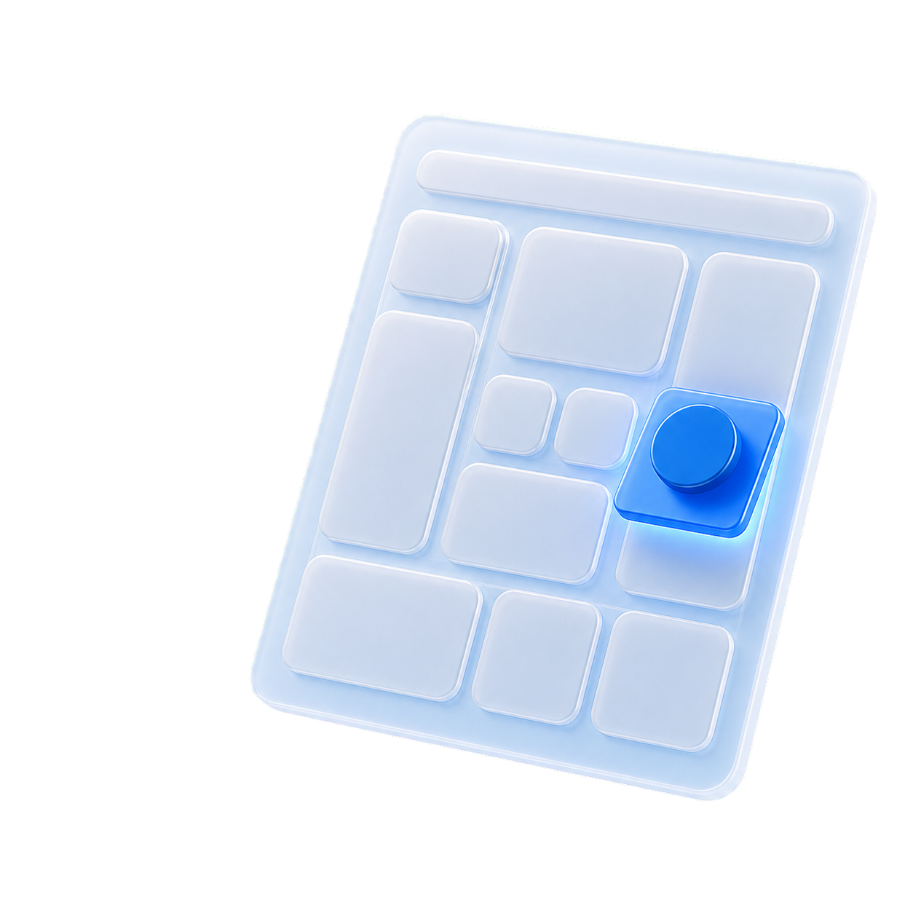
Official LIKELION at SKU
PART 2 · BM과 수익 모델 구분
한쪽은 운영 설계도, 한쪽은 계산대
| 개념 | 핵심 질문 | 쉬운 비유 |
|---|---|---|
| 비즈니스 모델 | 이 사업은 어떻게 작동하고 지속되는가? | 가게 전체 운영 설계도 |
| 수익 모델 | 돈은 누구에게서 어떤 방식으로 들어오는가? | 계산대에서 돈 받는 방식 |

Official LIKELION at SKU
PART 2 · BM과 수익 모델 구분
예시: AI 마케팅 서비스
| 비즈니스 모델 | 외식업 사장님의 리뷰·고객 데이터를 분석해 홍보 콘텐츠 생성을 돕는 AI 마케팅 비서 |
|---|---|
| 수익 모델 | 월 구독료 + 영상 생성 건당 과금 + 프리미엄 리포트 판매 |
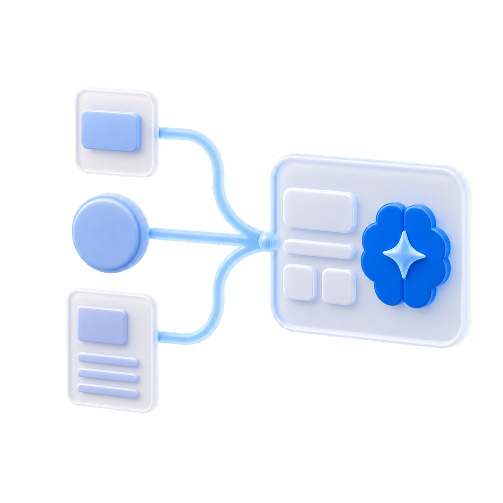
Official LIKELION at SKU
PART 3 · 수익 모델 이해와 선택
수익 모델은 발명이 아니라 선택과 조합
돈 버는 방식은 사실 거의 정해져 있습니다. 이미 있는 구조 중 우리 서비스에 맞는 걸 고르고 섞는 일에 가깝죠. (대부분 2~3개를 조합합니다.)

Official LIKELION at SKU
PART 3 · 수익 모델 이해와 선택
15개 수익 모델 메뉴판 (1/2)
| No. | 수익 모델 | 한 줄 뜻 | 잘 맞는 서비스 | 봐야 할 숫자 |
|---|---|---|---|---|
| 1 | 구독형 | 월·연 단위 반복 결제 | SaaS, OTT, 뉴스레터 | 반복 매출, 이탈률 |
| 2 | 프리미엄(Freemium) | 기본 무료, 고급 유료 | 생산성·협업·디자인 툴 | 무료→유료 전환율 |
| 3 | 기부·후원형 | 팬·사용자의 자발적 후원 | 창작자, 커뮤니티, 오픈소스 | 후원액, 후원 지속률 |
| 4 | 광고형 | 사용자는 무료, 광고주가 지불 | 미디어, 검색, SNS | 트래픽(DAU/MAU), CTR |
| 5 | 거래 수수료형 | 거래 성사 시 일정 비율 수취 | 마켓플레이스, 배달앱 | 거래액(GMV), 수수료율 |
| 6 | 제휴(어필리에이트)형 | 고객을 보내주고 소개료 | 리뷰·추천 콘텐츠, 블로그 | 전환율, 전환당 수익 |
| 7 | 직접판매형 | 제품·콘텐츠를 직접 판매 | 전자책, 강의, 굿즈 | 객단가, 재구매율 |
| 8 | 인앱 구매형 | 앱 안에서 아이템·기능 개별 구매 | 게임, AI 앱, 콘텐츠 앱 | 결제자 비율, 결제자당 매출 |
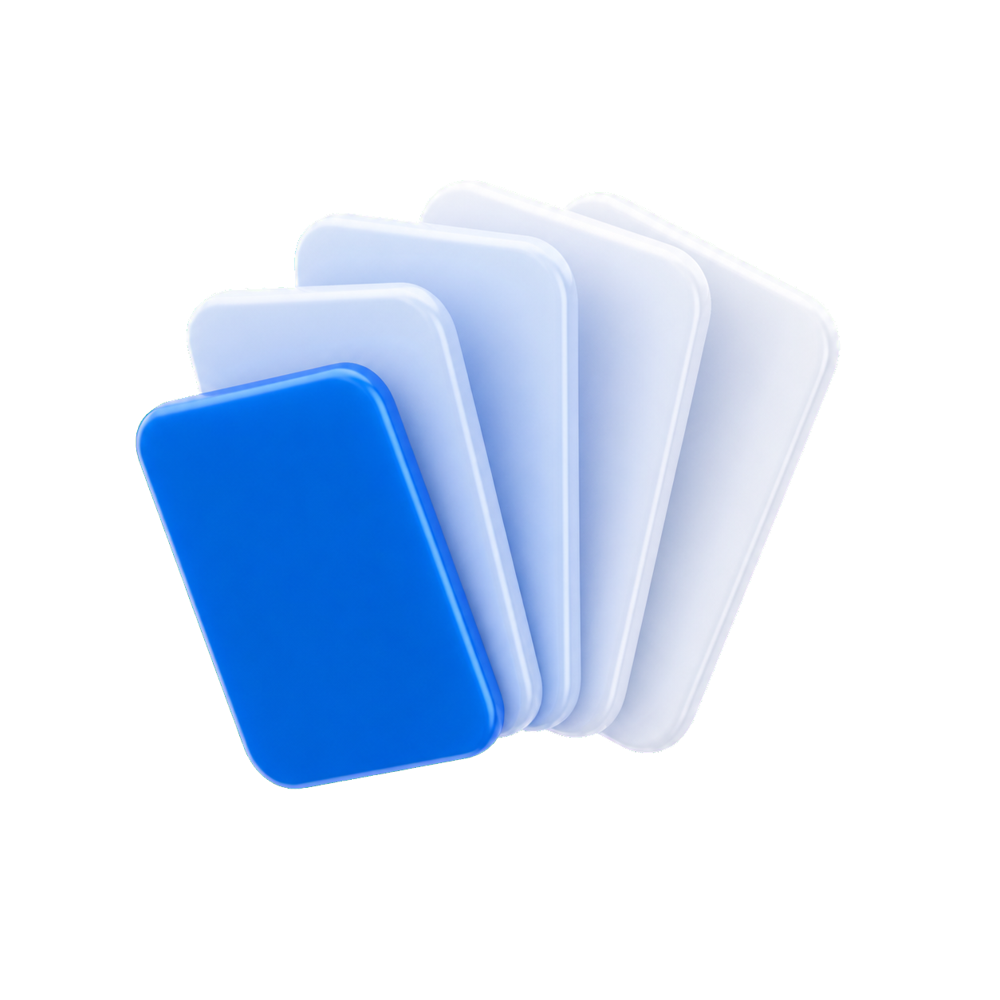
Official LIKELION at SKU
PART 3 · 수익 모델 이해와 선택
15개 수익 모델 메뉴판 (2/2)
| No. | 수익 모델 | 한 줄 뜻 | 잘 맞는 서비스 | 봐야 할 숫자 |
|---|---|---|---|---|
| 9 | 라이선스형 | 기술·콘텐츠·IP 사용권 판매 | 폰트, 캐릭터, 엔진, 특허 | 계약 수, 갱신률 |
| 10 | 화이트라벨·OEM | 내 제품을 남의 브랜드로 공급 | B2B 솔루션, API 제품 | 파트너 수, 유지율 |
| 11 | 종량제 | 쓴 만큼 지불 | 클라우드, API, AI 토큰 | 사용량, 단위 원가 |
| 12 | 면도기-면도날형 | 본체는 싸게, 소모품에서 수익 | 프린터·잉크, 캡슐커피 | 소모품 재구매율 |
| 13 | 성과보수형 | 결과가 나왔을 때만 청구 | 채용, 광고 대행, 리드 생성 | 성과 발생률, 건당 수익 |
| 14 | 데이터 판매형 | 쌓인 데이터를 리포트·API로 | 상권 분석, 시장 리포트 | 데이터 품질, 구매 반복률 |
| 15 | 렌탈·대여형 | 소유가 아니라 기간 사용권 | 차량, 장비, 공간, 의류 | 가동률, 회수 기간 |
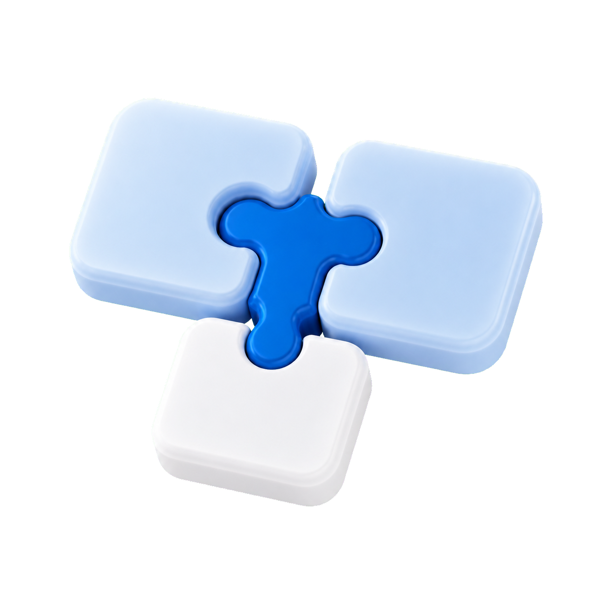
Official LIKELION at SKU
PART 3 · 수익 모델 이해와 선택
전체 함께 · 약 5분워밍업: 역기획으로 수익 포인트 읽기
모두가 아는 앱 1개(배달의민족·토스·유튜브·당근)를 떠올리고 아래 질문에 답해봅시다.
| 단계 | 질문 |
|---|---|
| ① 수익 포인트 | 이 앱에서 돈이 발생하는 지점은 어디인가? |
| ② 모델 분류 | 그건 위 15개 중 무엇인가? (하나가 아닐 수 있음) |
| ③ 근거 | 이 서비스엔 왜 그 모델이 맞을까? |
| ④ 지불 주체 | 돈 내는 사람이 앱 쓰는 사람과 같은가, 다른가? |

Official LIKELION at SKU
PART 3 · 수익 모델 이해와 선택
쓰는 사람 ≠ 내는 사람
이 ‘지불 주체가 다르다’는 감각이 오늘의 핵심 중 하나입니다.
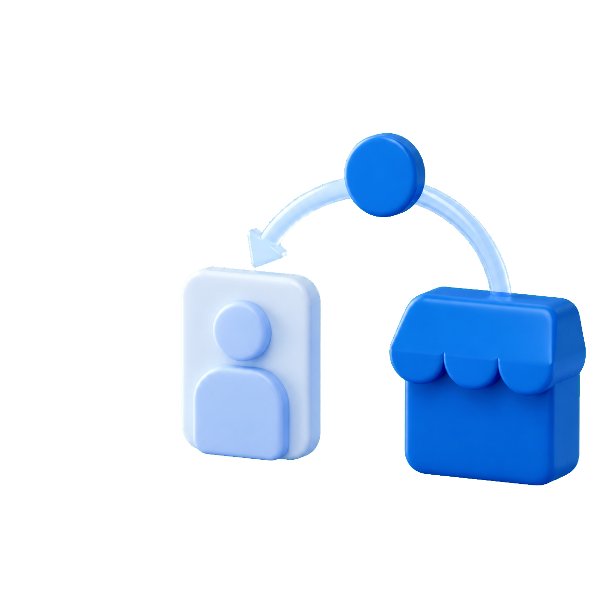
Official LIKELION at SKU
PART 3 · 수익 모델 이해와 선택
수익 모델 고르는 5가지 질문
“돈 될 것 같은 방식”이 아니라 “고객 행동과 비용 구조에 맞는 방식”을 골라야 합니다.
| 판단 기준 | 확인 질문 | 잘 맞는 수익 모델 |
|---|---|---|
| 사용 빈도 | 매일·매주 반복해서 쓰나? | 구독형, 프리미엄, 인앱 구매형 |
| 지불 주체 | 사용자가 내나, 제3자가 내나? | 직접판매형 / 광고형·제휴형 |
| 가치 발생 시점 | 쓰는 순간 가치? 결과가 나와야 가치? | 종량제 / 성과보수형 |
| 원가 구조 | 사용량 늘수록 서버·AI 비용도 느나? | 종량제, 하이브리드 구독 |
| 반복성 | 한 번 팔고 끝? 계속 받을 수 있나? | 구독형, 렌탈형, 면도기-면도날형 |
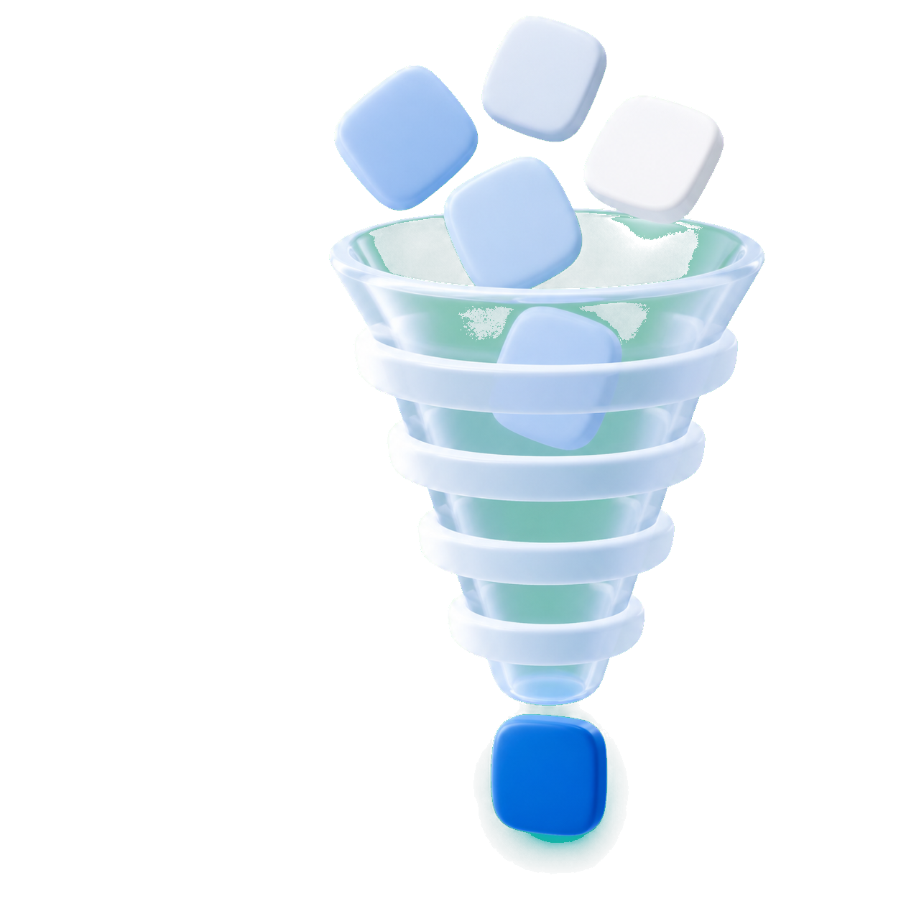
Official LIKELION at SKU
PART 3 · 수익 모델 이해와 선택
꼭 기억할 질문 하나
“돈 내는 사람 = 쓰는 사람인가?”
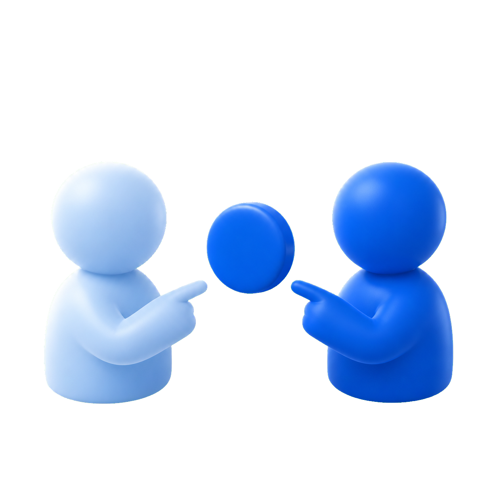
Official LIKELION at SKU
PART 4 · Lean Canvas로 정리
린캔버스: 비즈니스 모델을 한 장(9칸)에
비즈니스 모델 전체를 한 장(9칸)에 정리하는 도구입니다. (BMC를 초기 아이디어 검증용으로 줄인 것이 린캔버스예요.)
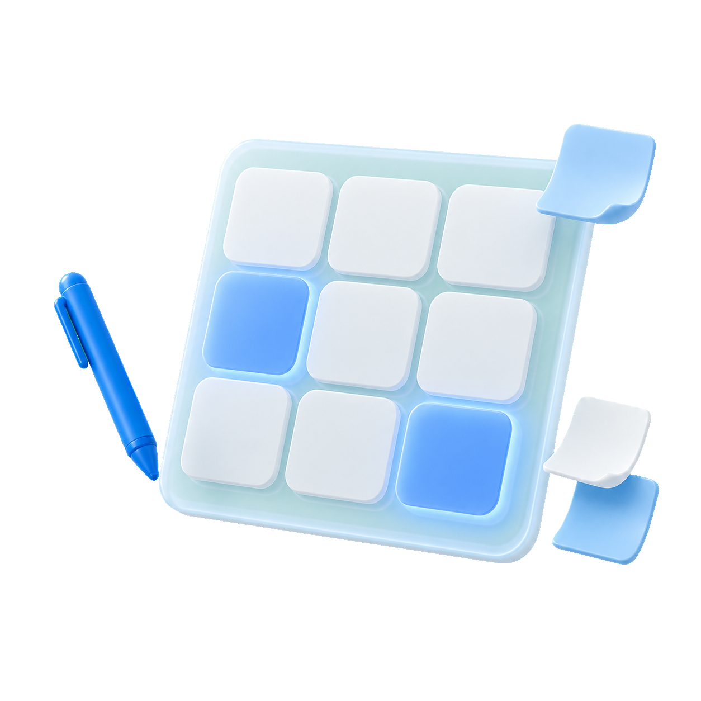
Official LIKELION at SKU
PART 4 · Lean Canvas로 정리
BMC와 린캔버스, 뭐가 다를까?
비즈니스 모델 캔버스
Business Model Canvas · 2005, 오스터왈더
- 사업의 전체 구조를 9칸에 그림 (고객·자원·파트너·수익 등)
- 이미 굴러가는 사업을 설명·정리하기에 좋음
- 관점: “이 사업은 어떻게 작동하나”
린캔버스
Lean Canvas · 2010, 애시 모리아 — BMC의 스타트업판
- BMC를 초기 아이디어 검증용으로 다이어트한 버전
- 문제·솔루션·지표·경쟁우위에 집중해 위험을 빠르게 점검
- 관점: “이 아이디어, 진짜 될까”
Official LIKELION at SKU
PART 4 · Lean Canvas로 정리
선정 3분팀 프로젝트 선정
각 팀은 팀원 3명의 아이디어톤 프로젝트 중 1개를 골라 진행합니다.
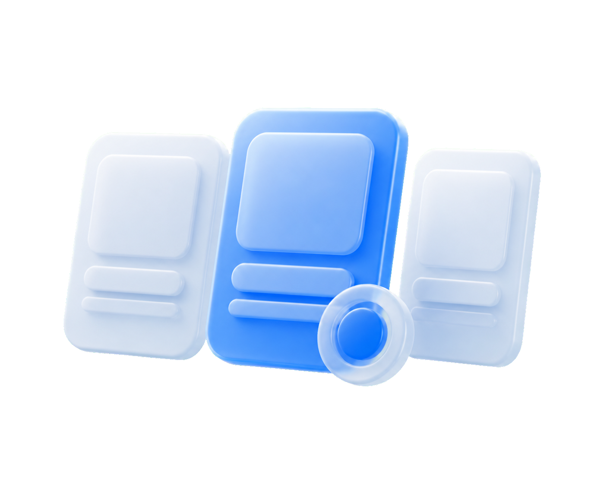
Official LIKELION at SKU
PART 4 · Lean Canvas로 정리 · 번호(①→⑨) 순서로 채우기
린캔버스 9칸, 채우는 순서
문제
고객이 겪는 가장 큰 문제 1~3개. 그리고 지금은 그 문제를 어떻게 해결하고 있는지(기존 대안)도 함께 적습니다.
솔루션
각 문제를 풀어 줄 핵심 기능(MVP). 문제와 1:1로 연결되게.
핵심 지표
사업이 잘되는지 판단할 핵심 숫자 1개.
고유 가치 제안
“왜 굳이 우리 서비스를 써야 하나?”를 한 문장으로. 경쟁 서비스와 다른 이유를 분명하게 담습니다.
경쟁 우위
남이 쉽게 따라 못 하는 우리만의 강점.
채널
고객에게 닿는 경로(앱스토어·SNS·입소문 등).
고객군
그 문제로 가장 아픈 핵심 고객, 그리고 제일 먼저 쓸 얼리어답터(2주차 페르소나).
비용 구조
서비스 운영에 드는 주요 비용. 특히 사용량이 늘면 같이 커지는 변동비(서버·AI 등).
오늘의 핵심수익원
어떤 수익 모델로 돈이 들어오나(15개 중 1~2개 조합) + 돈을 내는 사람이 누구인지.
오늘의 핵심Official LIKELION at SKU
PART 4 · Lean Canvas로 정리
이 수익이 성립하려면 무엇이 참이어야 하나?
⑥수익원 칸을 채울 때, 팀에서 이렇게 물어보세요.
- 우리 수익 모델은 15개 중 무엇인가? (5질문으로 근거 대기)
- 돈 내는 사람 = 쓰는 사람인가?
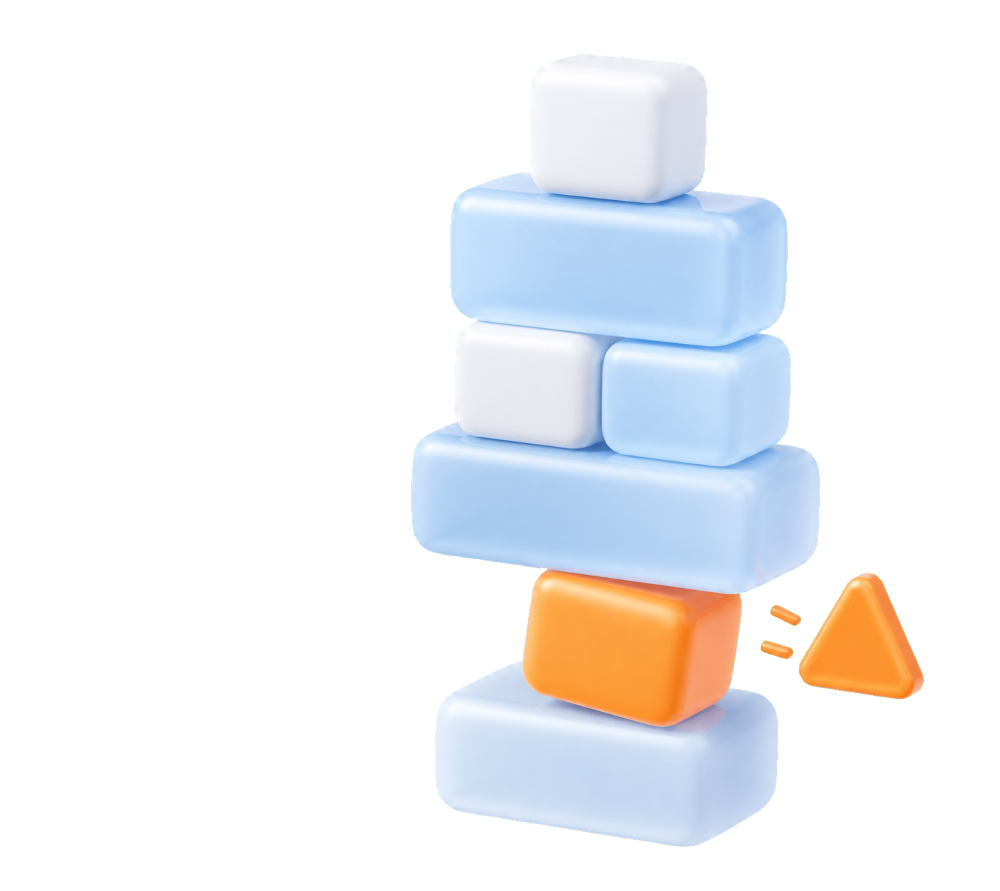
Official LIKELION at SKU
PART 4 · 핵심 지표로 ⑧칸 채우기
수익 모델을 검증하는 핵심 지표
Official LIKELION at SKU
PART 4 · 핵심 지표로 ⑧칸 채우기
전부 보지 말고, 딱 1개만
너희 ⑥수익원에 맞는 가장 중요한 지표 1개를 골라 ⑧칸에 적으세요.
※ 참고 — LTV는 매출이 아니라 마진(이익) 기준. “LTV/CAC 3:1”은 절대 법칙이 아니라 산업·단계마다 다른 경험칙입니다.
Official LIKELION at SKU
보너스 · 가격 전략 (맛보기)
가격은 감이 아니라 전략이다
수익 모델을 정해도 가격을 잘못 매기면 사업성이 무너집니다. 가격엔 정하는 방법(전략)이 있어요.
- 가치 기반 가격 — 원가가 아니라 고객이 느끼는 가치 기준 (③고유 가치 제안과 직결).
- 참고 설문 기법: Van Westendorp, Gabor-Granger (이름만 기억).
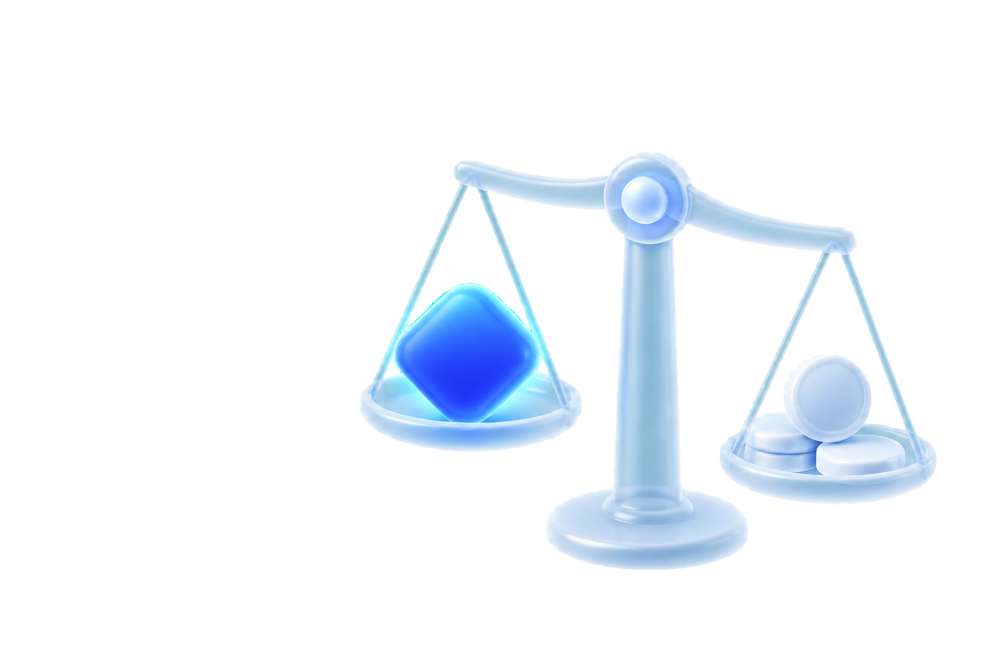
Official LIKELION at SKU
마무리 · 발표 전 점검
흔한 오해와 수정 문장
| 잘못된 표현 | 왜 문제인가 | 더 정확한 표현 |
|---|---|---|
| “우리 비즈니스 모델은 구독입니다.” | 구독은 수익 모델 한 조각일 뿐 | “우리는 B2B SaaS이고, 수익 모델은 월 구독형입니다.” |
| “광고 붙이면 수익화됩니다.” | 트래픽·광고주 없으면 광고 수익은 작음 | “반복 트래픽이 일정 규모 이상이면 광고형을 검토할 수 있습니다.” |
| “AI니까 무조건 종량제죠.” | 고객 예측 가능성과 마진 사이 균형 필요 | “AI 사용량에 따라 원가가 변하니, 구독+종량제 결합을 검토합니다.” |
| “MVP는 기능 최소한으로 개발하는 거죠.” | 랜딩페이지·수기 운영도 MVP가 될 수 있음 | “MVP는 핵심 가치를 최소한의 방식으로 검증하는 실험입니다.” |
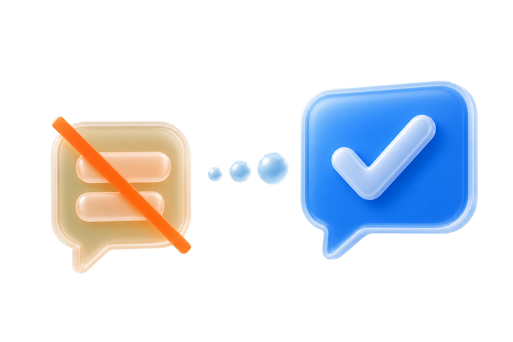